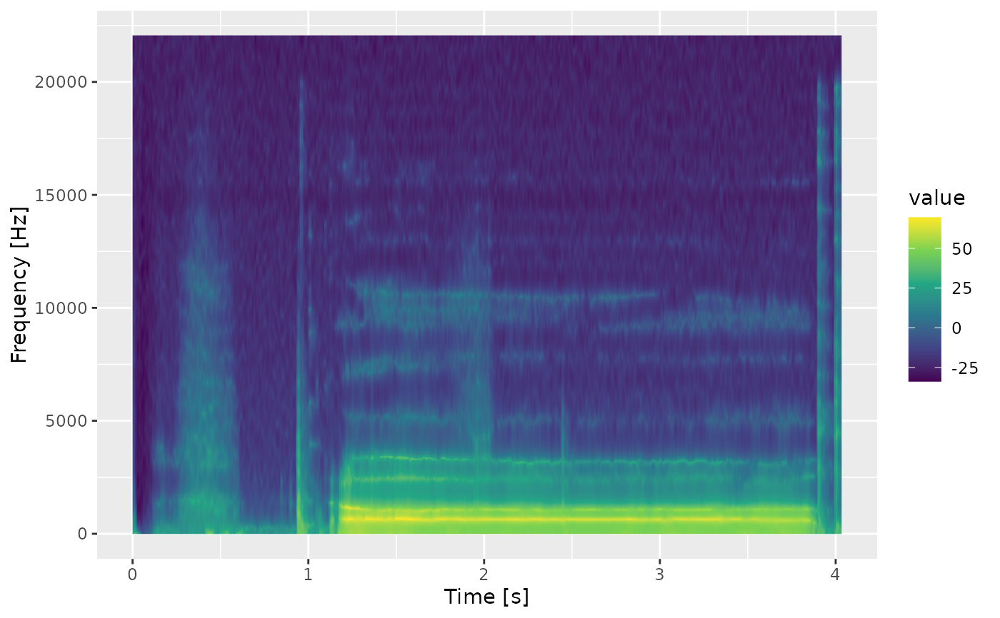

Plot a spectral track as a spectrogram
geom_spectrogram.RdA ggplot2 layer that draws a multi-column spectral track of an AsspDataObj
as a time x frequency raster, with the track values (dB for the package's
spectra) on the fill scale.
Usage
geom_spectrogram(
mapping = NULL,
data = NULL,
...,
tracks = NULL,
time = "frame_time",
freq_hz_per_bin = NULL,
na.zeros = FALSE,
na.rm = FALSE,
interpolate = FALSE,
show.legend = NA,
inherit.aes = FALSE
)Arguments
- mapping
Set of aesthetic mappings created by
ggplot2::aes(), applied to the time x frequency table the layer prepares (frame_time,freq,value). WhenNULL(default) the spectrum is drawn withaes(x = frame_time, y = freq, fill = value).- data
The data to display: an
AsspDataObjholding a spectrum (fromtrk_dft_spectrum(),trk_lps_spectrum(),trk_css_spectrum()or any other multi-column track), the wide table fromas.data.frame.AsspDataObj(), or an already long table. Inherited from the plot whenNULL.- ...
Other arguments passed on to
ggplot2::layer().- tracks
Character. The spectral track to draw when
dataholds more than one multi-column track.NULL(default) uses the only one.- time
Character. Preferred name of the time column of
data. The plotted table always names itframe_time.- freq_hz_per_bin
Numeric. Spacing between the coefficients in Hz, overriding the spacing derived from the
origFreqof the object. Needed whendatacarries no sample rate.- na.zeros
Logical. Convert stored zeros to
NA, leaving those raster cells unfilled. Default:FALSE.- na.rm
Logical. Remove
NAvalues before drawing. Default:FALSE.- interpolate
Logical. Interpolate the raster for a smoother image. Default:
FALSE.- show.legend, inherit.aes
Passed on to
ggplot2::layer(), with ggplot2's usual defaults exceptinherit.aes = FALSE(see Details).
Details
SSFF stores a spectrum from 0 Hz up to the Nyquist rate, so the coefficients
of a track with n columns sit at 0, bin_hz, ..., (n - 1) * bin_hz with
bin_hz = origFreq / (2 * (n - 1)): a 2048-point spectrum of 44.1 kHz audio
has 1025 bins of ~21.5 Hz. The track must be a frequency-domain track and
data must hold exactly one multi-column track, or tracks must pick it;
multi-column tracks of anything else (formants, LPC coefficients) belong to
geom_track().
The raster is drawn by ggplot2::geom_raster()'s engine, which needs evenly
spaced times and frequencies (all spectra in this package are evenly spaced).
Zoom with ggplot2::coord_cartesian() rather than scale limits to keep the
raster intact.
See also
geom_track() for single-value tracks and waveforms, ggtrack()
for automatic track labels.
Examples
wav <- system.file("samples", "sustained", "a1.wav", package = "superassp")
# \donttest{
if (requireNamespace("ggplot2", quietly = TRUE)) {
library(ggplot2)
dft <- trk_dft_spectrum(wav, toFile = FALSE, verbose = FALSE)
ggplot() +
geom_spectrogram(data = dft) +
coord_cartesian(ylim = c(0, 5000))
# an object inherited from the plot works the same way
lps <- trk_lps_spectrum(wav, toFile = FALSE, verbose = FALSE)
ggtrack(lps) +
geom_spectrogram() +
labs(y = "Frequency [Hz]") +
scale_fill_viridis_c()
}

# }